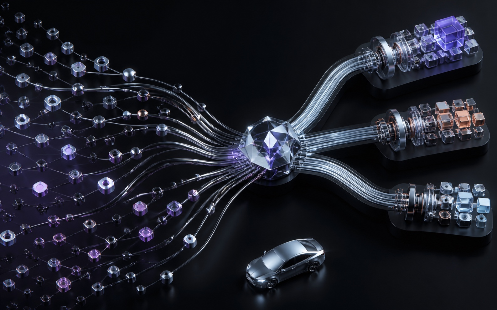

AI 归因 / CRM 产品化
二手车收车侧 AI 智能归因
自动聚合多源业务信息、识别战败原因，并形成业务复核与数据回流闭环。
95%
500 条工单人工核验一致率

问题背景
二手车收车链路长，战败节点分散。人工填写原因依赖个人判断，口径不统一，也难以支持规模化业务复盘。
产品目标
- 聚合过程信息，自动输出结构化战败原因。
- 统一三级归因标签和业务判断口径。
- 接入 CRM，让结果可以复核、回写和持续迭代。
我的工作
我负责 AI 归因链路、三级标签体系和 CRM 接入方案，推动能力从 Workflow 验证进入线上业务闭环。
- 用 Prompt + Workflow 搭建数据聚合、原因识别、标签归因和结果沉淀链路。
- 设计三级归因标签，联合业务分析判断逻辑并完成效果调优。
- 梳理任务触发、数据准入、结果回写和异常重试等 10 余项 CRM 规则。
结果
联合业务核验 500 条工单，AI 归因与人工判断一致率达到 95%。单 Case 分析时间从约 20 分钟缩短到约 1 分钟。
业务延伸
结构化归因数据可以进一步支持战败复盘、流程优化和转化策略分析。相关业务机会从 1.0% 提升至 2.7%。
项目材料
归因链路、标签体系和 CRM 交互样例将在完成脱敏后补充。
材料待补充